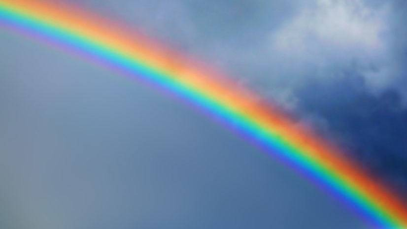

We've always been fascinated by the beautiful colored arc in the sky.
now it's time to find out what this is and how it happens.
Let's check the 10 Rainbow facts.

1. Rainbows are multi-coloured arcs that form in the sky and are formed when sunlight shines through the water. As a result, light reflects off the water droplets, bends (called refraction) and splits.
2. When sunlight shines through the water droplets, it splits into seven colours. The seven colours of the rainbow are red, orange, yellow, green, blue, indigo and violet. This is called a light spectrum! An easy way to remember the colours in order is to use the name Roy G. Biv.
3. The outer colour of a rainbow is normally red, and the inner colour is normally violet. However sometimes red rainbows are visible where you only see red light. This can happen at sunrise or sunset when the sun is on the horizon.
4. To see a rainbow, you need to be standing so the sun so the sun is behind you, and the water in front of you.
5. A rainbow can be a full circle of light. Because you’re normally standing on the ground when you look at one, you only see half of it. However if you were in an aeroplane you would see more of the circle.
6. You don’t only see a rainbow after it rains as rainbows can occur anywhere there’s water in the air. In other words, you could even see one if there’s sea spray at the beach or spray at a big, crashing waterfall.
7. Sometimes, you may even be lucky enough to see a double rainbow! Double rainbows are formed when light reflects twice in the raindrops.
8. Many cultures around the world have a myth about rainbows and the most famous rainbow myth is from Ireland. The Irish legend is that there’s a pot of gold at the end of a rainbow, but it’s guarded by a tricky mythological creature called a leprechauns. Do you think you’ll ever find the end of the rainbow and nab that pot of gold?
9. Make a rainbow at home! You don’t need to wait for a rainstorm to see a rainbow because you can use our GeoSafari Discovery Prism. The smooth edges bend and split light and as a result, you'll see the colours of the rainbow.
10. The moon can also create rainbows, they’re called moonbows! They're just like rainbows made by the sun, but are made by the moon instead. On earth, we even see fogbows which is where light reflects and refracts through fog to create a soft rainbow. Watch this video to learn more about unusual rainbows.
If you have any questions please feel free to leave a comment in the comment box below!!